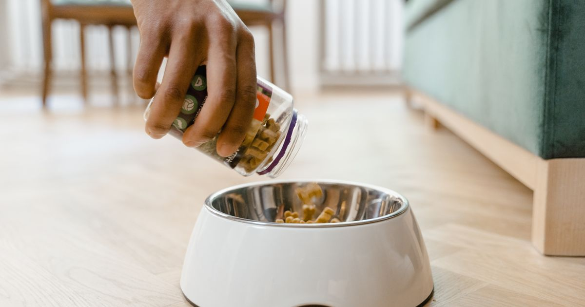

Este post contém links de afiliado. Podemos receber uma comissão em compras feitas através deles, sem custo adicional para você.
Um comedouro automático vale a pena para tutores com rotina irregular, viagens frequentes ou mais de um pet para alimentar em horários diferentes. Não vale a pena, ou pelo menos não justifica um modelo caro, para quem já está em casa na maior parte do dia e só quer "modernizar" a alimentação sem um problema real para resolver.
Key Takeaways
- O preço médio de um comedouro automático completo gira em torno de R$ 300, mas modelos de entrada custam a partir de R$ 28 (Consulado da Ração, retrieved 2026-08-20).
- Modelos baratos podem travar ou liberar porção errada, problema mais comum com ração de grãos grandes, que entope o mecanismo.
- Um comedouro automático não substitui atenção e supervisão do tutor, nem resolve problemas de comportamento como ansiedade alimentar.
- Gatos podem levar alguns dias para se acostumar com o equipamento, já que são naturalmente desconfiados de objetos novos que liberam comida sozinhos.
- A maioria dos modelos de entrada funciona sem Wi-Fi, com temporizador programado direto no painel do equipamento.
Resumo em uma linha: Vale a pena quando resolve um problema real de rotina (horário irregular, viagens, múltiplos pets); não compensa como acessório sem necessidade concreta.
Compre se: sua rotina de trabalho ou viagens impede horários fixos de alimentação, ou você tem mais de um pet com necessidades alimentares diferentes.
Não compre (ainda) se: você está em casa na maior parte do dia, ou seu pet tem histórico de ansiedade alimentar que exige acompanhamento comportamental, não automação.
guia completo de comedouro automático para pet
| Prós | Contras |
|---|---|
| Regularidade nos horários mesmo com rotina imprevisível | Modelos baratos podem falhar na calibração da porção |
| Reduz o risco de jejum prolongado ou compensação excessiva | Não substitui supervisão e atenção do tutor |
| Modelos Wi-Fi permitem ajuste remoto | Gatos podem levar dias para se adaptar ao equipamento |
| Opções para ração úmida com refrigeração | Ração de grãos grandes pode entupir o mecanismo |
Nossa leitura do mercado: cruzando os relatos de compra disponíveis publicamente com o preço médio de R$ 300 citado por fontes do setor, o padrão observado é que o custo-benefício melhora significativamente acima da faixa de entrada (~R$ 28-80), não porque os modelos baratos sejam ruins, mas porque a margem de erro de calibração pesa mais quando o produto já é simples. Um comedouro de faixa intermediária com boa avaliação costuma ser mais previsível que o mais barato disponível.
como configurar o app do comedouro automático Wi-Fi
A escolha certa começa pelo tipo de ração, não pelo preço. Ração seca de grãos pequenos ou médios funciona bem na maioria dos mecanismos de rosca ou disco giratório, que são os mais comuns em modelos de entrada e intermediários. Já ração de grãos grandes, ou formatos irregulares, tem mais chance de entupir esses mecanismos, então vale conferir nas avaliações de outros compradores se o modelo específico foi testado com o tipo de ração que você usa antes de decidir.
O segundo critério é a quantidade de refeições programáveis por dia. Modelos de entrada costumam permitir de 1 a 4 refeições fixas, o que atende bem à maioria das rotinas domésticas. Se você precisa de mais flexibilidade, como horários diferentes em dias de semana, fins de semana ou porções variáveis para pets em dieta, vale considerar um modelo com aplicativo, que costuma permitir ajustes mais granulares sem precisar reprogramar o equipamento fisicamente a cada mudança.
O mecanismo básico é o mesmo, mas a capacidade e o formato do comedouro costumam mudar conforme o porte do pet. Cães de porte médio a grande geralmente precisam de reservatórios maiores (4 litros ou mais) e porções configuráveis em quantidades maiores por refeição. Gatos e cães pequenos se adaptam bem a reservatórios menores, e alguns modelos específicos para gatos priorizam bandejas mais rasas, já que gatos tendem a evitar comer com os bigodes pressionados contra as bordas do recipiente. Para quem quer entender melhor essa diferença na prática, vale conferir nosso comparativo entre comedouro automático para gato x para cachorro.
O erro mais frequente é comprar pelo preço mais baixo sem checar a compatibilidade com o tipo de ração usada em casa. Isso costuma gerar frustração nas primeiras semanas, quando o mecanismo trava ou libera porção incorreta, mesmo que o produto não seja defeituoso, apenas incompatível com o formato do grão.
O segundo erro comum é não testar o equipamento antes de viajar ou depender dele integralmente. Vale rodar o comedouro por pelo menos uma ou duas semanas em casa, ajustando porções e observando se o pet aceita bem o novo formato de alimentação, antes de confiar nele durante uma ausência mais longa. Isso também dá tempo para o pet se adaptar ao som do mecanismo, que pode assustar animais mais arredios nos primeiros usos.
Por fim, muitos tutores esquecem de revisar a calibração de porção quando a rotina do pet muda, como em casos de dieta, crescimento de filhote ou mudança de tipo de ração. Um comedouro automático programado uma vez e esquecido pode continuar entregando uma porção desatualizada por meses, o que reforça que o equipamento é uma ferramenta de apoio, não um substituto do acompanhamento do tutor.
Esta análise foi construída cruzando relatos públicos de compra e uso, o preço médio de mercado citado por fontes especializadas do setor pet, e critérios técnicos comuns usados para avaliar comedouros automáticos (compatibilidade com tipo de ração, número de refeições programáveis, presença de bateria reserva e conectividade). Não se trata de um teste laboratorial comparativo entre marcas específicas, mas de uma síntese de fontes públicas voltada a ajudar na decisão de compra. Veja nossa política editorial e de afiliados para entender como avaliamos e selecionamos produtos.
Não, desde que seja bem calibrado e ajustado à porção correta para o peso e a idade do animal. O risco não está no equipamento em si, mas em erros de configuração, como programar porções acima do recomendado pelo veterinário ou não revisar o cronograma quando a rotina do pet muda.
Sim. A maioria dos modelos de entrada funciona de forma totalmente offline, com temporizador programado diretamente no painel do equipamento. O Wi-Fi é um recurso adicional, útil para ajustar horários remotamente ou receber notificações, mas não é obrigatório para o funcionamento básico.
Varia bastante por modelo, mas a maioria dos comedouros de entrada com pilhas dura de 2 a 4 meses em uso normal, funcionando como backup para quedas de energia. Modelos ligados na tomada dependem da rede elétrica, então vale considerar um modelo com bateria reserva se a região tiver quedas de luz frequentes.
Depende da diferença de porção entre eles. Se os pets comem a mesma quantidade e não competem por comida, um comedouro maior compartilhado pode funcionar. Se as porções ou os tipos de ração são diferentes, o ideal é um comedouro por pet, ou um modelo com reconhecimento por coleira/chip, para evitar que um coma a porção do outro.
O comedouro automático vale a pena quando resolve um problema real de rotina, não como acessório por si só. Antes de comprar, confirme a compatibilidade com o tipo de ração do seu pet, avalie quantas refeições você realmente precisa programar por dia, e considere começar por um modelo de faixa intermediária, que costuma equilibrar melhor preço e confiabilidade. Testar o equipamento em casa antes de depender dele numa viagem evita boa parte dos problemas relatados por outros compradores.
melhor comedouro automático para cachorro — os mais vendidos · melhor alimentador automático para gatos
Escrito pela Equipe Smart Pet Gadgets. Veja nossa política editorial e como verificamos as fontes citadas neste artigo.
🐾 Confira o preço e a disponibilidade atual no Mercado Livre.
Ver no Mercado Livre →Link de afiliado: podemos receber uma comissão por compras feitas através deste link, sem custo adicional para você.
Nildo Alves — curadoria de produtos pet no Smart Pet Gadgets. Testa e pesquisa produtos para cães e gatos, cruzando especificações de fabricante com boas práticas veterinárias e dados de mercado.
Sobre o Smart Pet Gadgets · Contato · Política editorial e de afiliados